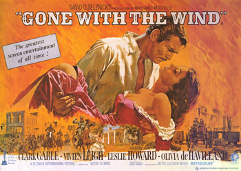
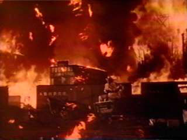

|
Of all the movies made in Hollywood that deal with the Civil
War and its aftermath, none is so well known and so popular
as Gone With the Wind. It is a picture of tremendous
dimensions, not just as its story line and its length, but
one that truly can be appreciated as a film about Hollywood
and filmmaking. Its history contains many stories and
anecdotes that have become Hollywood legend. It is a motion
picture of great historical significance.
Upon its release in December 1939, Gone With the
Wind became the perfect exclamation point to a decade of
Hollywood films that will never be reproduced. During the
1930s, men such as Louis B. Mayer, Jack L. Warner, Harry
Cohn, David O. Selznick, and Darryl F. Zanuck ran their
|

Promotional poster for
Gone With the Wind.
|
studios with such autocratic control that by 1939 their
studios were capable of releasing two new pictures every day
of the week. Many film historians have nominated 1939 as the
crowning achievement in filmmaking, a year that saw the
release of such classic films as Stagecoach, The Wizard
of Oz, Mr. Smith Goes to Washington, Young Mr. Lincoln,
Ninotchka, Dark Victory, and Gunga Din. The list
is almost endless, but the motion picture of the year, and
certainly the event of the year, was Gone With the
Wind. Considered by many to be the best American film
ever made, and one that tops many lists by film historians,
it is interesting to explore its history and find that film
was almost never made.
The motion picture was based on a best-selling novel,
which sprouted from the typewriter of an Atlanta woman named
Margaret Mitchell. A small delicate lady with a will of
iron, she had always toyed with the idea of writing a novel
about the Civil War. She was entertained as a child by her
grandmother with stories of Sherman's siege of Atlanta and
the Reconstruction in Georgia. In 1926, Mitchell was
confined at home due to an accident, which resulted in a
sprained ankle. Because of the accident, she was forced to
give up her job at the Atlanta Journal newspaper, and
her restive behavior caused her husband, John Marsh, to
suggest that her convalescence would be a good time to begin
writing her Civil War story. Although she had no clear plot
in mind, she soon began writing. Like many writers, she
started out of sequence, writing the last chapter first and
soon formulating a beginning chapter.
As the years progressed, Mitchell's novel began to grow
and grow. She worked most diligently, yet only her husband
and a few close friends knew what she was doing. Margaret
Mitchell was not a woman to toot her own horn, and she did
not talk about her story to anyone. If she were questioned
about it, she would go so far as to even deny its existence.
Her own thoughts were that it wasn't much of
anything--merely an exercise to keep herself busy.
By 1932, she had come to lose interest in the work. The
ankle she had sprained in the 1926 accident had been
seriously hurt when she was a child, and the recovery from
the second accident had been very slow. But as she was able
to rejoin her social circles, the manuscript was relegated
to a cupboard, and it would be a couple more years before
she touched it again.
In 1935 Harold Latham, a representative of the Macmillan
Publishing Company of New York, was touring the South
looking for new authors and manuscripts. A fellow employee
of his was a good friend of Mitchell and had mentioned to
him that she was writing a novel. Upon meeting Mitchell at a
luncheon, Latham made a casual remark about her book, but
Mitchell flatly denied that there was a book. Latham
mentioned it several more times that afternoon, resulting in
the same responses. He said that he would not push the
issue, but that if she ever did write a story, to look him
up first.
That night, however, Latham received a phone call in his
hotel room. Margaret Mitchell was in the lobby and wanted to
see him. When he went downstairs, he found her sitting on a
sofa, her mammoth manuscript piled next to her. Her husband
had persuaded her to change her mind, and she had decided to
let Latham take a look at it. Latham packed up the
manuscript and the next day headed for his next stop, New
Orleans. Upon arrival, he received a telegram from Mitchell
asking him to return the story--she had changed her mind
again. But Latham had begun to read the manuscript on the

Margaret Mitchell.
|
train from Atlanta, was impressed by what he had read, and
offered to publish it. At first, Mitchell refused, afraid of
her own ability as a writer, and how the book would be
received in the South. But with urging, again from her
husband, Mitchell said yes, and for the next six months
returned to the writing of the book. She rewrote chapters,
changed characters' names, checked historical details--which
were most important to her--and continued to rewrite chapter
one. She never felt that it was right, and before she
finally submitted it, there were reports that she had
written seventy versions of the first chapter.
The title of the book had been a problem too. Through the
years it had been called Bugles Sang True, Baa! Baa!
Black Sheep, Tote the Weary Load, and, echoing the
book's closing fine, Tomorrow is Another Day. Never
being happy with any of them, Margaret Mitchell finally came
up with a line out of a poem by Ernest Dawson: I have
forgotten much, Cynara! Gone With the Wind."
Macmillan scheduled the book for publication in May
1936--the original price: three dollars. It was a phenomenon
in publishing history. The book was 1,037 pages long and
weighed three-and-a-half pounds. No American novel had been
so massive. The Book-of-the-Month Club wanted it for its
release in July, and 50,000 copies were printed. Advance
sales were remarkable, considering that the book was so long
and that it was the first novel by an unknown author. It was
received very enthusiastically by the critics, was awarded
much praise, and was a hit in the South, where Margaret
Mitchell was most concerned about opinion.
Sales continued to skyrocket. In the first three weeks
Gone With the Wind sold 176,000 copies. By the end of
the year, that figure was over a million-and-a-half copies.
It was awarded the Pulitzer Prize in 1937. All indications
were that it would be a hit if it were made into a motion
picture.
However, it didn't seem to be a hit with Hollywood's
studio chiefs. Prior to the publication of any novel,
publishers send galley proofs to the studios, hoping to
generate interest in movie versions of popular novels. Upon
receipt at the studios, the proofs are read by trained
personnel who recount the basic plots and highlights to
producers, and then a decision is made as to whether it
would be a success on the screen.
Such was the case in 1936 when the galleys of Gone
With the Wind turned up at Metro-Goldwyn-Mayer. Louis B.
Mayer's personal storyteller, Kate Corbaly, related the
story's plot to the head of Hollywood's largest studio.
Personally, Mayer thought it had potential--it had a great
heroine, Scarlett O'Hara, for its lead, and MGM had a large
stable of competent actresses who could fill the role. But
the head of production at MGM was Irving Thalberg, one who
more often than not would argue with Mayer about the
possibility of future films. When told the story, Thalberg
said no, reminding Mayer that movies dealing with the Civil
War don't make money. And the picture would no doubt be
expensive, judging from the length of the book.
So MGM said no, and the book made the rounds of the other
studios, all with the same answer. Some of the studios felt
that none of their actresses were competent enough to handle
the role of Scarlett, so only mild interest was generated
for it. A copy of the book did reach the hands of Kay Brown,
who was the head of the New York office of Selznick
International Pictures. Brown was overwhelmed by the size of
the book, but nevertheless she became captivated by it as
she began to read it. She immediately wired David O.
Selznick in Hollywood: "I urge, beg, coax, and plead with
you to read this novel at once. I know that after you read
it you will drop everything and buy it." Selznick read the
synopsis and said no, for the same reasons every other
producer In Hollywood gave: he felt that he didn't have an
actress at his studio who could tackle the role of Scarlett
O'Hara; the asking price for the novel was higher than his
small independent studio could pay; and Civil War pictures
were poor box office.
Kay Brown was not satisfied. With Selznick's refusal, she
sent the synopsis to Jock Whitney, who was the company
chairman of Selznick International. Whitney's response was
that if Selznick didn't buy the book, he would buy it
himself. Selznick, upon hearing Whitney's remark,
recapitulated and bought the novel for $50,000, which was
the highest price ever paid for film rights to a first-time
novel. Selznick was still leery of the project as he set
sail for a three-week vacation to Hawaii. Upon return,
however, he discovered that his newest property had sold as
many as 300,000 copies, and it was the talk of the nation.
In addition, the news had come out that it had been
purchased by Selznick. Everyone in America began to
speculate on which Hollywood stars would be cast in the
picture.
Selznick was very shrewd when it came to producing
movies. He realized the potential was in his hands for a
blockbuster. He had grown up on the fringes of the motion
picture business along with his brother Myron. Their father,
Lewis Selznick, ran his own film company, New World
Pictures, during the silent days. He had been extremely
unpopular with his peers, men such as Mayer, Goldwyn, and
Adolph Zukor, and had been forced into bankruptcy in 1923.

David O. Selznick
|
David and Myron loved and revered their father immensely and
felt that he had been the victim of callous businessmen. In
their own ways, they vowed revenge upon Hollywood for their
father's demise, and ultimately, his death. David became a
producer so that he could compete with the other studio
moguls, and Myron became one of the most successful agents
in Hollywood.
David felt that to earn respect for his father's name, he
had to have the opportunity to make quality pictures, much
like his father wanted to make. He became head of production
at RKO Studios in the early thirties, bringing to the screen
the classic thriller King Kong, and making RKO a
profitable small studio. Louis B. Mayer saw Selznick's
success and offered him the position of first line producer
at MGM. Selznick accepted and also won the hand of Mayer's
daughter, Irene, whom he soon married.
Mayer was reportedly grooming Selznick to take the place
of Thalberg, who was recovering from a heart attack.
Selznick's desire, though, was to make quality Pictures,
pictures based on successful classical novels. While at MGM,
he oversaw the production of David Copperfield and
Little Women and was pleased with their success. His
ideas began to clash with those of his father-in-law, and
Selznick soon decided to head his own studio. He left MGM in
1935 and formed Selznick International Pictures, taking over
the old Pathe Studios in Culver City, a few blocks away from
MGM. The studio soon began to turn out films based on such
classic stones as Anna Karenina, Little Lord
Fauntleroy, and The Prisoner of Zenda. In 1937,
he was preparing an adaptation of Mark Twain's classic
The Adventures of Tom Sawyer, and to make the lead
character refreshing and unassuming, Selznick initiated a
nationwide talent search for a boy with the correct
freshness to play Tom Sawyer. He was very pleased with the
results and noted that the publicity surrounding the search
helped generate interest in the picture, even though it
would not be released until 1938.
Upon the acquisition of the rights for Gone With the
Wind, Selznick properly realized that it would take a
minimum of two years before the film could be released.
Understanding Hollywood as he did, Selznick prepared to keep
Gone With the Wind in the public eye. From his
experience with Tom Sawyer, he knew that there was nothing
like publicity to help instill life into a picture. He soon
hired a top publicity agent, Russell Birdwell, to be in
charge of keeping the public talking about Gone With the
Wind. Because the film's main character was a woman,
Selznick hired George Cukor to be the director on the film.
Cukor had directed Little Women for Selznick at MGM,
and was known in Hollywood for his adept handling of
actresses.
Selznick's first plan of action was to find an actress
that could play Scarlett O'Hara. Many leading actresses were
considered, such stars as Joan Crawford, Bette Davis,
Claudette Colbert, Tallulah Bankhead, Norma Shearer,
Katherine Hepburn, Paulette Goddard, and Loretta Young.
Rumors were flying throughout Hollywood as to who it would
be. In keeping with his obsession for quality, SelznIck
coerced many of these ladies into taking screen tests. But
he was not satisfied. Selznick felt that they were all too
identifiable as women, and it would be difficult to present
them as a teenager, Scarlett's age as the film begins.
The problem was exactly the opposite for Selznick's male
lead. Ever since the publication of the novel, the
moviegoing public assumed that the only actor in Hollywood
who could play Rhett Butler, the book's rakish blockade
runner and speculator, was Clark Gable. Indeed, after the
novel's appearance, Gable's fan mail increased, with much
attention being focused on his natural ability to play
Rhett. Selznick knew this, but the problem was that his
father-in-law held the contract for Gable's services.
Selznick also knew that Mayer would ask a very handsome
price for the use of his major leading man. Selznick agreed
that Gable should play Rhett Butler, but to throw the public
off the scent, overtures were made to Gary Cooper, Ronald
Colman, Frederick March, and Basil Rathbone. Gable himself
didn't covet the role--he felt it was too difficult for him
and was too emotional for his abilities as an actor. But the
public clamor for Gable continued. Even on the MGM lot,
Gable's longtime buddy Spencer Tracy would occasionally
greet him by saying "Hiya, Rhett!"
While the casting for Rhett was practically in the bag,
Selznick was not happy with the actresses testing for
Scarlett. Although the more seriously considered candidates
seemed to be either Bankhead or Goddard, Selznick and
Birdwell began to toy with the idea of finding an unknown to
play Scarlett, similar to what had been done for Tom Sawyer.
In addition, a talent search would keep the public talking
about the film until he was ready to begin filming. With
sets needing to be designed and constructed, and many other
details to be taken care of, shooting could not commence
until late 1938 anyhow.
So the great talent search was on for Scarlett O'Hara.
Selznick hired 110 talent agents to scour the country for an
unknown. Many were flown to Hollywood for screen tests.
Selznick assigned Cukor to personally conduct the search in
the South. He was to approach acting clubs, stock theaters,
college acting circles and amateur productions to find a
Scarlett. But many times he didn't have to leave his hotel.
Wherever he went, women from all over the South approached
him claiming to be Scarlett O'Hara. At the Atlanta railroad
station, one young lady caused an uproar on a departing
train as she tore through it, ripping open staterooms in a
vain attempt to locate Cukor, who had not yet boarded. He
eventually eluded her by boarding the train from the
locomotive while one of his aides detained the girl on the
platform. This was a scene repeated many times in the search
for Scarlett.
The furor did not escape Selznick, either. On Christmas
Day, 1937, a large crate was delivered to the front door of
Selznick's home. Upon opening it, Selznick discovered a
large book-shaped object with a facsimile of the Gone
With the Wind dust jacket on it. The front cover opened
and out popped a young girl with appropriate Southern
costume, saying in a distinct Southern accent "Merry
Christmas, Mr. Selznick--I am your Scarlett O'Hara."
As 1938 began, Selznick's stockholders were clamoring for
him to begin production. He continued to delay, hoping the
search for Scarlett would turn up something. He finally
approached Louis B. Mayer for the details of a loan-out for
Gable's services. The price was high: Mayer wanted the
distribution rights for the film, and 50 percent of the
profits. MGM would, however, also supply half the production
costs up to a ceiling of two-and-a-half million dollars.
Selznick agreed, and he had Rhett Butler.
Casting continued more earnestly now. Selznick wanted
Leslie Howard to portray Ashley Wilkes. Howard balked at the
idea. He felt he had been playing too many weak-willed,
idealistic young men in movies, and he was really interested
in work behind the camera as a director. Selznick realized
this, and as a bonus for signing to play Ashley Wilkes,
Howard would be allowed to direct a future project with
Selznick.
Lost in the casting shuffle, with all the publicity
surrounding the part of Scarlett, was the role of Melanie
Hamilton. Most actresses in Hollywood were eyeing the
leading part except for one young lady--Olivia De Havilland.
Olivia was an established leading lady at Warner Brothers,
known mainly for playing opposite Errol Flynn in his
swashbuckling roles. Olivia sensed that the part of Melanie
might be a chance to escape those roles. She secretly read
the part of Melanie for Cukor and Selznick, and they both
agreed that she would be perfect for Melanie. But all three
knew the problem would be with her boss, Jack L. Warner.
Warner was a tight-fisted, paternal studio boss, and he did
not believe in loaning out his stars to other studios; he
did not want them to taste the freedom of the outside world.
But Olivia went to see him regarding the loan-out. When
Warner heard that she wanted the lesser role of Melanie, and
not the coveted Scarlett, he was astonished. "Oh, you don't
want to be in that picture. It's going to be the biggest
bust in town." Olivia didn't stop there, though. Knowing she
should put pressure where it would be the greatest, she met
secretly with Mrs. Jack Warner and pleaded her case. Mrs.
Warner, a one time actress herself, sided with Olivia, and
before long, Jack Warner changed his mind and allowed Olivia
to take the role of Melanie.
With all the major roles except Scarlett set, time was
running out for Selznick. It was now the fall of 1938, and
he knew he must begin filming. For one thing, Gable had to
be finished by a certain date to go back to MGM. The back
lot needed to be cleared so that construction could begin on
the sets for Atlanta and Tara. The suggestion was made,
though, to begin with one of the most complicated shots of
the film--the burning of Atlanta. With proper preparations
this could serve a two-fold purpose: it would finally get
the picture rolling in front of the cameras, and the old
unusable sets on the backlot could be burned and then
cleared so that construction could begin on the new sets.
The date was set for December 11. False facades were
constructed on the buildings on the backlot to more closely
resemble Civil War Atlanta. Pipes were run into all the
|

The Burning of Atlanta
|
buildings so that the flames could be fed by coal oil and
then doused with water forced through the pipes.
Arrangements were made to have all seven available
Technicolor cameras capture the event on film.
The night of the fire Selznick delayed as long as
possible, waiting for his brother Myron to arrive so that he
could witness the spectacle. Finally, he could wait no
longer. The order was given to begin, and Selznick, perched
on a platform to oversee the burning, handled the controls
that boosted the flames through the pipes. As the backlot
burned, all seven cameras followed the progress of stuntman
Yakima Canutt (doubling Clark Gable) and another stuntman
doubling Scarlett, as they fled the conflagration as
required by the script. The fire was started and stopped
eight times to capture as many angles as possible.
The flames and smoke could be seen from all over West Los
Angeles and Culver City. Panicked residents wondered what
was going on, and the fire station switchboard lit up
constantly. But the first shot was finally in the can. As
the studio fire department stepped in to douse the dying
embers, Selznick felt a sigh of relief. Gone With the
Wind had finally begun production after two years of
planning and publicity.
There are moments in Hollywood history that lend
themselves to the aura of legend. Such was the case the
night of the burning of Atlanta. It has been reported that
as the flames died out, Myron Selznick finally arrived with
two clients with whom he had been having dinner. Both were
from England, a young, handsome actor named Laurence
Olivier, and his fiance, Vivien Leigh. They climbed the
platform where David greeted them with mild rebukes about
their tardiness. Myron steered the young actress toward his
brother, saying "I want you to meet Scarlett O'Hara." David
looked at her and was captivated. "One look and I knew she
was right," he later commented. There are those in Hollywood
who say that this exchange did not happen, that it was
perhaps a story concocted by the publicity department. Be
that as it may, it is the kind of story that the moviegoing
public thrives on. And David Selznick had found his Southern
belle.
This was not, however, the first time that Selznick had
heard of Vivien Leigh. She had been mentioned to him as a
possible Scarlett early in the search, but in a memo to Kay
Brown on February 3, 1937, Selznick wrote "...I have no
enthusiasm for Vivien Leigh. Maybe I will have, but as yet
have never seen a photograph of her." A year later, Selznick
finally saw Leigh in A Yank at Oxford, and in another
memo dated February 17, 1938 stated "...while I think Vivien
Leigh gave an excellent performance and was very well cast,
I don't like her for the part in our picture." No matter
what his thoughts had been, Selznick found Vivien Leigh to
be exactly what he wanted. After a short screen test to
verify that she could act, she signed her contract, and
Gone With the Wind could begin production in earnest.
The story begins in the Old South (a land of cavaliers
and cotton kings), amid the political rumblings of war. Fort
Sumter has been fired upon, and the youth of the country are
excited about the possibility of a fight. At Tara, a large
plantation outside Atlanta, we meet Scarlett O'Hara, the
pretty daughter of Tara's proud Irish owner, Gerald O'Hara.
She is a flirtatious young lady who revels in the attention
she receives from all the young men in the county, all of
whom openly declare their love for her.
But to Scarlett, there is only one love, Ashley Wilkes,
the handsome young heartthrob from the nearby Twelve Oaks
plantation. Ashley is a romantic idealist who enjoys deeply
the life he leads at the plantation. He fears that the
approaching war will end it all and hopes that the North
will allow the South to secede in peace. Scarlett dreams of
Ashley constantly and fantasizes about the day when he will
sweep her off her feet and marry her. Until that time comes,
all other men are just filling in time.
At a barbecue at Twelve Oaks, she discovers that Ashley
is going to marry Melanie Hamilton, his cousin. Melanie is a
kind, optimistic and warm-hearted girl, full of love, who
can find fault with no person. And Scarlett hates her.
Scarlett declares her love for Ashley in the privacy of the
library, but Ashley puts her off as kindly as he can. He
leaves Scarlett, pouting, humbled and angry, who soon
realizes she is not alone. Her declaration of love has been
overheard by a roguish visitor, Rhett Butler, who has been
hiding behind a divan. He eyes Scarlett lustfully, seeing
right through her coquettish manner and flirtatious eyes,
and realizes that deep down underneath Scarlett is a woman
to be dealt with. Rhett, however, is a man who everyone
looks upon with cautious eyes--his colored past as a
speculator and the fact that he was expelled from West Point
means that respectable folk must give him distance. But
Rhett is a realist, and he has already irked the idealistic
young men at the barbecue with his frank talk that the North
is better equipped than the South, and that it can quickly
bottle up the South and starve them to death.
Later that day, news comes that President Lincoln has
called up volunteers to fight the South. All the fine young
lads, including Ashley, jump on their horses to go enlist
amidst the cheers and tears of those remaining. However,
caught in the glow of Scarlett, Melanie's brother Charles
proposes to her, and in a fit of desperation to hurt Ashley,
Scarlett accepts. Both couples marry before Ashley and
Charles leave for the war, sure of the nationwide feeling
that the war will last only a few weeks.
The few weeks stretch into months, and news reaches
Scarlett that Charles has died of pneumonia, which he
contracted following an attack of measles. Scarlett Is
devastated--not by the loss of Charles, whom she did not
love, but by the realization that she is now required by
society and the social norm to wear black and partake of no
social activities. To cheer her up, Scarlett's mother
suggests that Scarlett go to Atlanta to visit Melanie and
her Aunt Pittypat. Scarlett jumps at the chance, realizing
that Ashley will go there when he gets leave.
She finds Atlanta a bustling, patriotic city full of
parties and bazaars given for the war effort. At one such
bazaar, which Scarlett attends, the guest of honor Is none
other than Rhett Butler, now a successful blockade runner.
Rhett is amused by Scarlett's mourning dress, and knowing
that her real desire is to dance and have a good time, he
shocks Atlanta society by asking her to dance. Scarlett,
pleased to be the center of attention again, glowingly
accepts Rhett's invitation.
The war draws closer to the city as Ashley returns home
on leave during Christmas 1863. He is saddened by what he
has seen in the war and realizes that the idealistic images
he and his friends had shared at the barbecue have been
destroyed by the cruelties of war. He knows that when the
war ends, if he sees it, he will be far away. His first
concern is with Melanie's safety, and he asks Scarlett to
take care of her, for him. Scarlett counters with another
declaration of love, hoping to hear the same from Ashley.
Ever the gentleman, Ashley ignores her pleas and leaves to
go back to the front.
As 1864 unfolds, Atlanta experiences the tragedies of
retreating armies as Sherman's Union troops approach from
the Northwest. Melanie and Scarlett find work as volunteers
in the hospital; Melanie doing so out of her patriotic
heart, Scarlett simply because she hasn't anything else to
do. As the number of casualties mount, Melanie must
relinquish her duties due to pregnancy, and Scarlett begins
to see the war more closely. As a nurse, she is asked to
assist in the amputation of a soldier's leg. She tries to
enter the operating room, but the screams of the soldier are
too much for her as there is a lack of chloroform. It
becomes one of the powerful scenes in the picture because it
is not graphic. Unlike today's motion pictures, which rely
on the excessive use of blood and gore, the impact of this
scene lies with the viewer's imagination. All that is shown
is a horrified look on Scarlett's face as she fights the
nausea within her. She turns from the operating room,
reacting to a struggling shadow upon the wall, accompanied
by the anguished and horrifying screams of the unfortunate
soldier. She does not return to the hospital.
Sherman's forces lay siege to Atlanta, and as the
Confederate Army prepares to evacuate the city, Melanie goes
into labor. Scarlett, anxious to leave the city and go home
to Tara, remembers her promise to Ashley and delivers the
baby. She sends for Rhett to help get them out of the city.
As the army begins to burn its store of ammunition, Rhett
leads the ladies through the burning streets, fighting off
bands of ruffians in a race against time before the
ammunition explodes. In a final dash across the railroad
tracks, the ammunition blows, sending walls of flame
shooting up into the night sky, illuminating the path before
them.
Outside the city, their wagon trundles along amidst the
dying remains of the retreating Confederate Armies. Weary,
bone-tired soldiers drop from exhaustion along the road.
Rhett, who had always mocked the idea of soldiering, begins
to change, feeling guilty that these young lads have carried
the burden as he continued to live a life of ease. Ashamed
of himself, he decides to join the army. As the road turns
off toward Tara, he declares his love for Scarlett, yet
leaves her and Melanie to make it the rest of the way.
Scarlett summons the resolve to keep going and drives the
wagon closer to Tara, pushing the horse until it drops at
the gate of Tara. Having earlier passed the smoky ruins of
Twelve Oaks, she fears the worst for her beloved home. Yet,
upon arrival, she sees that it has survived, Just a house
amid the ruins of what was once a proud and beautiful
plantation.
All is not well at home, though. Scarlett's mother has
died from the fever, and her sisters are stricken with the
same ailment. As a result, her father has begun to lose his
mind, only a shell of the man he was once. Yankees have
stripped Tara of all food and poultry, and there is nothing
to eat. The burden of existence now rests squarely on
Scarlett's shoulders. She wanders the naked fields,
realizing that they will only survive because of her
strength. "As God is my witness," she vows, "they're not
going to lick me. I'm going to live through this, and when
it's all over, I'll never be hungry again ... If I have to
lie, steal, cheat or kill. As God is my witness, I'll never
be hungry again."
And she does live through it, forcing everyone at Tara to
work in the fields. Scarlett becomes the leader, the one
everyone looks to for guidance. The war passes them by as
Sherman marches to the sea, and it remains for Scarlett to
see that Tara survives. She kills an intruding Yankee
deserter, finding money in his haversack with which she can
buy food. Soon after news of Lee's surrender, Ashley returns
to Melanie's open arms, a jealous Scarlett desiring to join
them.
With the carpetbaggers sweeping the south, the taxes for
Tara are raised to $300. Now broke, Scarlett can think of
only one person who would have that much money--Rhett. She
goes to Atlanta to plead her cause ("I can't let Tara go"),
even to the point of offering herself as collateral for the
money. But Rhett's funds are frozen, and he turns her down.
As she roams the streets of Atlanta, pondering on how to
raise the money, she runs into her sister Suellen's fiance,
Frank Kennedy. Frank, happy to see her, invites her in to
look at his prosperous new store. Frank is proud of the
store, but saving money for the day when he and Suellen can
marry. Seizing the opportunity, Scarlett tricks Frank into
marrying her, using her new husband's funds for saving Tara.
Scarlett throws herself into the running of Frank's
business, coercing him into buying a lumber mill that he
doesn't want. She talks Ashley into being her partner in the
mill, another ploy to keep Ashley close by. Scarlett still
believes that Ashley secretly loves her, and she is awaiting
the day when he will take her away, the two of them living
in blissful happiness.
One day, while traveling alone to the mill on business,
Scarlett is attacked by some renegades. In retaliation that
night, Frank, Ashley, and some other men go to clear out the
woods where she was attacked. Rhett learns of this and also
discovers that they are headed for a trap. He rushes to save
them, but Ashley is wounded and Frank is killed. Rhett is
able to save Ashley from arrest by forming an alibi stating
that he and Ashley had visited a local brothel, with the
full consent of the owner, Belle Watling, a longtime friend
of Rhett's.
Again, Scarlett is a widow, and Rhett wastes no time in
proposing to her. "I can't go all my life waiting to catch
you between husbands," he muses. Scarlett admits that she
doesn't love him, but realizes that the two of them would be
sinfully rich. They marry and create an opulent, gaudy
mansion that is the talk of Atlanta. As the years pass,
Scarlett gives birth to a daughter, Bonnie Blue, and Rhett
is beside himself with pride. He loves Bonnie deeply and
spoils her immensely. Although Bonnie brings some happiness
to the marriage, the rest of it is stormy. Scarlett has yet
to lose sight of Ashley and selfishly decides that she will
not allow Rhett into her bedroom. Rhett, enraged, goes to
see Belle, saying that he is through with Scarlett. With her
womanly insight, Belle realizes that Rhett is deeply in love
with Scarlett, and that he should think of Bonnie. Rhett
realizes that the best part of the marriage is his daughter,
and he vows that she will become a very popular, social
young lady, accepted by all the decent families of Atlanta.
However, the marriage continues to disintegrate. In a
drunken stupor, Rhett forces himself upon Scarlett one
night, and in a misunderstanding the next morning, he
suggests that they should divorce. He leaves with Bonnie on
a trip to London, but Bonnie is unhappy there. They return
to Atlanta, where Rhett discovers that Scarlett is
expecting. Although happy at first, Rhett insults Scarlett,
resulting in her fall down the staircase, losing the baby.
Rhett is in tears, taking full blame for the tragedy.
Scarlett's recovery is long; Rhett offers a reconciliation,
but Scarlett remains unmoved.
One day, they watch in horror as Bonnie is thrown from
her pony and killed. Rhett had taught her to ride, and
Scarlett uses this as grounds for the accusation that Rhett
killed the child. The two quarrel incessantly, and Rhett,
beside himself, refuses to let Bonnie be buried. Melanie,
who has always admired Rhett, is summoned to persuade him to
allow the funeral to take place. Melanie herself is weak due
to pregnancy, and after her conference with Rhett, she
collapses and suffers a serious miscarriage.
Confined to bed, it is only a matter of time before she
passes away. The vigil at the house includes Scarlett and
Rhett, and Melanie's last words, in private to Scarlett, are
that she would like Scarlett to watch out for Ashley.
Scarlett goes to Ashley and sees that he is an empty shell,
withered in tears. "Everything I had is going with her," he
whines. Rhett sees Scarlett throw herself at Ashley, and he
leaves. Scarlett, however, finally realizes that Ashley's
love for Melanie is unshakable, and that he is nothing
without her. He has let Scarlett dangle with his talk of
honor all these years, yet it is only now that Scarlett
realizes it, and the mistakes she has made as a result. She
rushes to find Rhett.
At their home, she finds Rhett busily packing. He has had
it, tried everything to keep their marriage whole. "If only
you'd met me halfway," he explains. Scarlett begs Rhett to
stay. But he heads for the door, Scarlett pleading "Where
shall I go? What shall I do?" He stops at the door, looks at
her, saying bitterly, "Frankly, my dear, I don't give a
damn," and leaves. Scarlett, in tears, tries to recover. She
doesn't know what to do, where to turn, until the ghostly
voices of her father, Ashley, and Rhett remind her that it
is Tara from where she gets her strength, and where she
belongs. "I'll think of some way to get him back," she
optimistically states. "After all, tomorrow is another day!"
When finally edited, the film ran more than four hours
long. Selznick was able to whittle it down until it ran
three hours and forty minutes, the longest American film
made up to that time. The filming had not been without its
share of problems. Soon after filming began, Gable felt that
Cukor was not handling the actors properly. He felt that
with Cukor's reputation as a woman's director, all his
attention was on the female roles. This resulted in Cukor's
dismissal from the film, and the hiring of Gable's own
favorite director, Victor Fleming, to take over the helm.
Two of Cukor's scenes remain in the picture--the Atlanta
ball, and the birth of Melanie's baby.
Fleming was a close friend of Gable's, and the two had
worked well together on other productions. Fleming had just
finished directing The Wizard of Oz for MGM and had
only two weeks to prepare for Gone With the Wind.
Although he received sole credit for the direction of the
picture, Fleming himself had to be relieved near the end of
production due to exhaustion, and Sam Wood stepped in. In
order to get the film completed, when Fleming was able to
return to work, Selznick retained Wood, using him to direct
other, less important scenes.
Rhett's exit line caused some controversy. At the time,
Hollywood had its own censorship office, the Breen Office,
which dictated the actions of characters on the screen. In
addition, the Breen Office also published a list of
forbidden words and phrases. Essentially, the office forbade
the use of any profanity in film, and Selznick had to fight
for the right to use Margaret Mitchell's dialogue for Rhett.
Selznick argued that it was a famous line in literature, and
that if it were not used, it would make Hollywood the
laughingstock of the world. Up until the film was released,
he fought for it. He secretly had a second version of the
scene filmed, with an alternate line, just in case. Finally,
however, he was allowed to use the original line, but had to
pay a fine of $5,000 to do so.
After production was finished, Selznick pushed for its
completion with undying fury. Never being sure that the
tight schedules he imposed on himself could be met by
others, he pushed people to their limits to get the final
post production of the film done. When he hired Max Steiner
to compose the score for the film, he informed the famous
composer that he would need the score finished in three
months. Steiner at first was appalled--he was not sure he
could compose three hours of music for a film in such a
short time, but he would do his best. Selznick was not
convinced that Steiner would complete the task. He
commissioned another composer, Franz Waxman, to begin
working on an alternate score, just in case Steiner
faltered. But Steiner worked tirelessly on it and created
the memorable, rousing and beautiful "Tara" theme for the
film, the one most often identified with Gone With the
Wind.
The premiere for the film could be held in no other city
except the story's hometown, Atlanta. Set for December 15,
1939, the premiere was at the Loew's Grand Theater, complete
with a stately new facade that resembled the front porch of

(from left to right) Vivien
Leigh, Clark Gable, Margaret Mitchell, and David
O. Selznick at the premiere of Gone With the
Wind.
|
Tara. The night before the premiere an elegant costume ball
was held for all the Hollywood celebrities that attended.
The governor of Georgia proclaimed a statewide holiday and
300,000 Southerners lined the streets for a parade of the
luminaries responsible for the film. It was a festive
occasion throughout the city, reinforcing their Southern
heritage and pride.
The impact of the film, even nearly five decades later,
has never abated. It became the top grossing film in
Hollywood's history and held that position until knocked
into second place by The Sound of Music in the 1960s.
Since that time, higher box office grosses by so-called
blockbuster movies have continued to surpass Gone With
the Wind, but the fact that it reached its high pinnacle
and held it for so long, speaks well for its popularity and
its following.
It has had subsequent reissues through the years since
1939. In 1967, MGM rereleased it in a 70mm wide screen
format, accompanied with a full stereophonic soundtrack. The
effect of this classic picture on the big screen was
tremendous, except that in the conversion from the film's
standard 35mm format, parts of the images were lost due to
the ratio of the smaller format to the larger.
Gone With the Wind survived the onslaught of
television, too. Not until the Bicentennial year of 1976 was
it ever shown on the small screen, and it proved a ratings
winner on its initial airing, with over 77 million viewers
watching it. In the late 1970s, the CBS network paid 35
million dollars for the right to broadcast Gone With the
Wind over a twenty-year period.
And in early 1985, Gone With the Wind made the
permanent transition to the home screen via the lucrative
videocassette market. MGM, after withholding the film's home
release for years, marketed the film with full fanfare. An
original inter-negative print of the film was discovered in
the studio's vaults. This print was fresh and untouched and
was the equivalent of having the original negative for use
in the transfer to videotape. Modem technology also helped
to provide a rich, hi-fi stereo soundtrack from the original
mono soundtrack. Together with the new negative, it produced
a copy of the film that presented the best quality
reproduction since the original. And sales were successful;
prior to its release, the videocassette of Gone With the
Wind had sold a quarter of a million copies!
As new generations discover it, Gone With the Wind
will continue to live, presenting a slice of American
history bound not only by the Civil War, but by Hollywood
itself. It is truly one of the exceptions to the Hollywood
rule that "Civil War movies are bad box office."
Source: John M. Cassidy, Civil War Cinema: A Pictorial History of Hollywood and the War Between the States
(Missoula, MT: Pictorial Histories Publishing Company, 1986), 33-57.
|